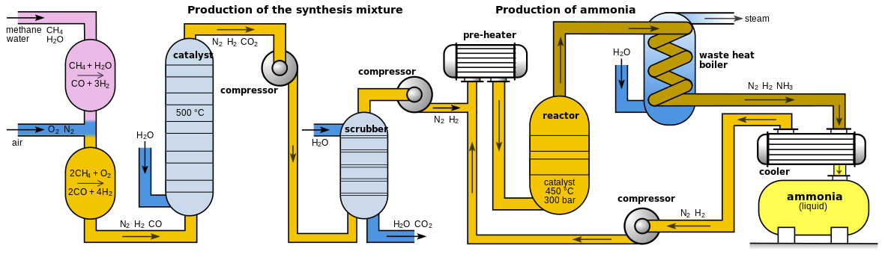
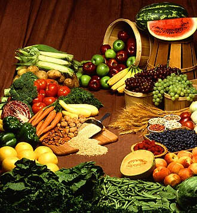

Food
Food is any substance consumed by an organism for nutritional support. Food is usually of plant, animal, or fungal origin and contains essential nutrients such as carbohydrates, fats, proteins, vitamins, or minerals. The substance is ingested by an organism and assimilated by the organism's cells to provide energy, maintain life, or stimulate growth. Different species of animals have different feeding behaviours that satisfy the needs of their metabolisms and have evolved to fill a specific ecological niche within specific geographical contexts.
Omnivoroushumans are highly adaptable and have adapted to obtain food in many different ecosystems. Humans generally use cooking to prepare food for consumption. The majority of the food energy required is supplied by the industrial food industry, which produces food through intensive agriculture and distributes it through complex food processing and food distribution systems. This system of conventional agriculture relies heavily on fossil fuels, which means that the food and agricultural systems are one of the major contributors to climate change, accounting for as much as 37% of total greenhouse gas emissions.

The food system has significant impacts on a wide range of other social and political issues, including sustainability, biological diversity, economics, population growth, water supply, and food security. Food safety and security are monitored by international agencies like the International Association for Food Protection, the World Resources Institute, the World Food Programme, the Food and Agriculture Organization, and the International Food Information Council. food processing and food distribution systems. This system of conventional agriculture relies heavily on fossil fuels, which means that the food and agricultural systems are one of the major contributors to climate change, accounting for as much as 37% of total greenhouse gas emissions.
Definition and classification
Food is any substance consumed to provide nutritional support and energy to an organism. It can be raw, processed, or formulated and is consumed orally by animals for growth, health, or pleasure. Food is mainly composed of water, lipids, proteins, and carbohydrates. Minerals (e.g., salts) and organic substances (e.g., vitamins) can also be found in food. Plants, algae, and some microorganisms use photosynthesis to make some of their own nutrients. Water is found in many foods and has been defined as a food by itself. Water and fiber have low energy densities, or calories, while fat is the most energy-dense component.
Food sources

In a given ecosystem, food forms a web of interlocking chains with primary producers at the bottom and apex predators at the top. Other aspects of the web include detrovores (that eat detritis) and decomposers (that break down dead organisms). Primary producers include algae, plants, bacteria and protists that acquire their energy from sunlight. Primary consumers are the herbivores that consume the plants, and secondary consumers are the carnivores that consume those herbivores. Some organisms, including most mammals and birds, diet consists of both animals and plants, and they are considered omnivores. The chain ends with the apex predators, the animals that have no known predators in its ecosystem. Humans are considered apex predators.
Humans are omnivores, finding sustenance in vegetables, fruits, cooked meat, milk, eggs, mushrooms and seaweed. Cereal grain is a staple food that provides more food energy worldwide than any other type of crop. Corn (maize), wheat, and rice account for 87% of all grain production worldwide. Just over half of the world's crops are used to feed humans (55 percent), with 36 percent grown as animal feed and 9 percent for biofuels. Fungi and bacteria are also used in the preparation of fermented foods like bread, wine, cheese and yogurt.

Plants
Photosynthesis is the source of most energy and food for nearly all life on earth. Photosynthesis is one main source of biomass, the food for plants, algae and certain bacteria and, indirectly, organisms higher in the food chain. Energy from the sun is absorbed and used to transform water and carbon dioxide in the air or soil into oxygen and glucose. The oxygen is then released, and the glucose stored as an energy reserve